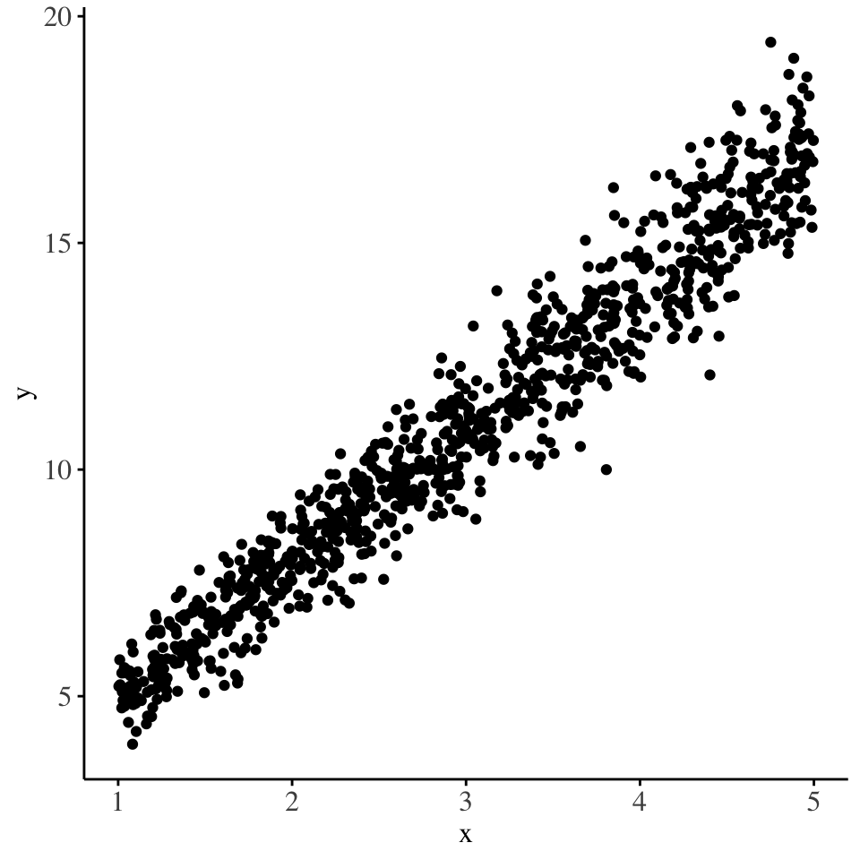
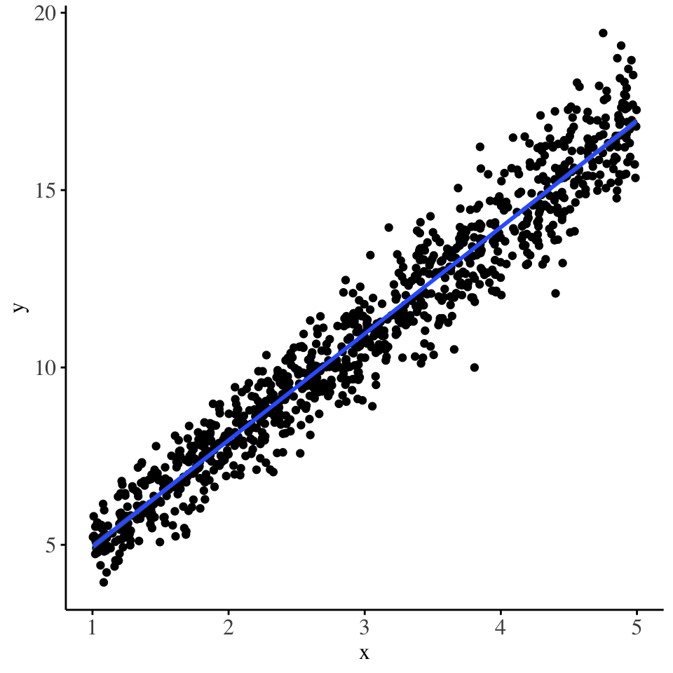

Generalized Additive Models for Location, Scale and Shape
code
stats
Author
Stanley Sayianka
Published
August 11, 2024
This loooong article will be my notes and code practices on the gems I pick up from reading the GAMLSS books1. There are three books in this series:
1 https://www.gamlss.com/information/the-books/
Stasinopoulos, M. D., Rigby, R. A., Heller, G. Z., Voudouris, V., & De Bastiani, F. (2017). Flexible regression and smoothing: using GAMLSS in R. CRC Press.
Rigby, R. A., Stasinopoulos, M. D., Heller, G. Z., & De Bastiani, F. (2019). Distributions for modeling location, scale, and shape: Using GAMLSS in R. Chapman and Hall/CRC.
Stasinopoulos, D. M., & Rigby, R. A. (2008). Generalized additive models for location scale and shape (GAMLSS) in R. Journal of Statistical Software, 23, 1-46.
I am currently reading book (3), as i consider it the main text introducing the GAMLSS method. Very briefly, GAMLSS are a class of models that allow us to not only model the mean of the response distribution (as is common in linear and generalized linear models), but consider other parameters of the response distribution2. The GAMLSS models further allow us to model the parameters of the response distribution using not only linear effects but also using additive smooth terms. This gives rise to a rich and flexible tool for modelling real-world data.
2 In the case of OLS, instead of only modelling the mean \(\mu\) of the response distribution, we could also build models which allow us to explain the variations in the volatility of the response distribution: \(\sigma\)
Chapter one
Mean and dispersion models
The mean and dispersion models are one of the simplest examples of GAMLSS models. Here we consider:
\[y ~ N(\mu_i, \sigma^2_i)\]\[g_1(\mu_i) = X_{i1}\beta_1\]\[g_2(\sigma_i) = X_{i2}\beta_2\] Here the \(g\) functions are link functions, taken to be the identity and log link function respectively.
This kind of model would be useful when the OLS model suffers from heteroskedasticity. In that case, it would imply that there is heterogenity in the distribution of error terms, and a quick remedy would be to try and model the variance of the response as a function of some covariates.
set.seed(832)data <-data.frame(x =runif(1000, min =1, max =5)) |>mutate(y =rnorm(n =1000, mean = (2+3*x), sd =sqrt(x/4)))data |>ggplot() +geom_point(aes(x=x, y=y)) + scientific_theme

# Fitting the traditional OLS model
The OLS model fitted to this data would yield the following diagnostic plots. Check the fitted model in the side margin:

The fitted regression line
lm_model <-lm(y ~ x, data = data)check_model(lm_model)